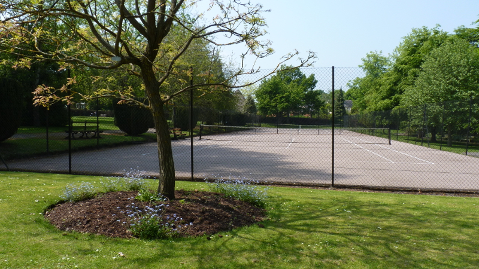

Welcome to Braintree and Bocking Public Gardens
A place for everyone to stroll, rest and play.
Coffee House Open
The Gardens Coffee House is open 7 days a week. Click here for details.
Tennis
Our hard courts operate year round. Please call to book on 07768 188047. You can now make an instant online payment via Paypal so it's easier than ever to enjoy the Gardens' lovely courts. Please ask for Paypal details when booking.
--------------------------------------------------------------------------------------------------------------------
The Gardens comprise 2.5 hectares (5 acres-plus) containing over 250
trees, many of special interest, alongside shrubs and formal and mixed flower beds of great variety, all lovingly maintained.
There is the "wild" garden (look for the many birds and squirrels), the round pool
with its water lilies and goldfish, the shaded laurel walk and the peaceful
paved seating area complete the entertaining variety of the Gardens.
Visit the John Ray Garden - inspired by the 300th anniversary of the publication
by John Ray, "The Father of English Botany", author of "The History of Plants" - this was opened by Dr. David Bellamy in 1986.
Or when the weather allows, book and play a game of tennis on one of our excellent courts, in picturesque surroundings.
--------------------------------------------------------------------------------------------------------------------
trees, many of special interest, alongside shrubs and formal and mixed flower beds of great variety, all lovingly maintained.
There is the "wild" garden (look for the many birds and squirrels), the round pool
with its water lilies and goldfish, the shaded laurel walk and the peaceful
paved seating area complete the entertaining variety of the Gardens.
Visit the John Ray Garden - inspired by the 300th anniversary of the publication
by John Ray, "The Father of English Botany", author of "The History of Plants" - this was opened by Dr. David Bellamy in 1986.
Or when the weather allows, book and play a game of tennis on one of our excellent courts, in picturesque surroundings.
--------------------------------------------------------------------------------------------------------------------